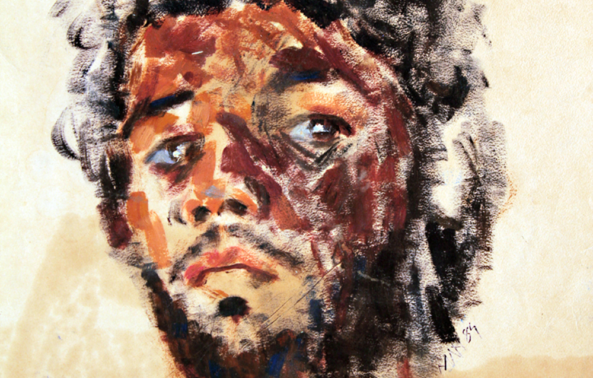
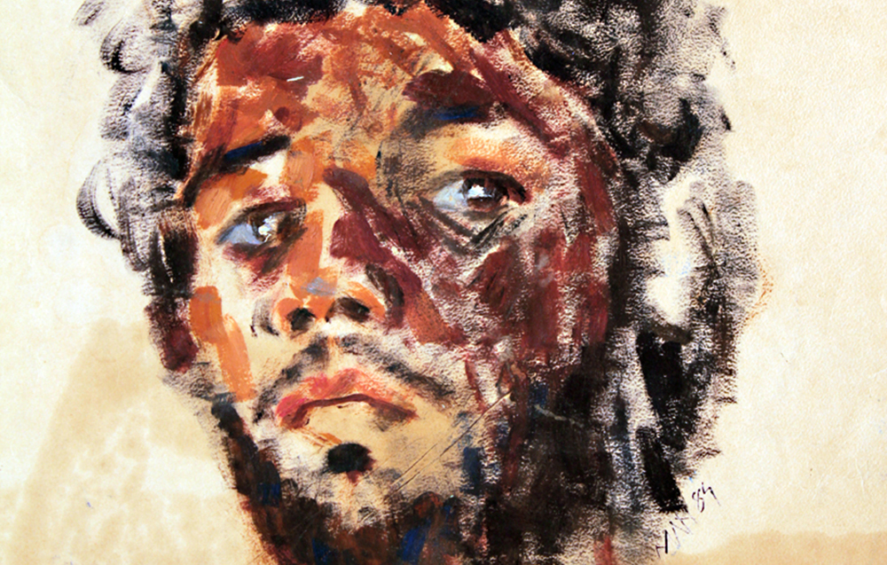

Gandhi- A Light House of the Life

Paintings is persistent art. To continue this perception in the society, Manhar Kapadia organizes many exhibitions on Gandhiji- his message and life style since 2006.
Manhar Kapadia has tried to express Gandhiji as a saint like character and an idol of rightousness too. His Divine virtues are there on canvas by Manhar Kapadia. We can feel them and dissolve ourselves on it.His paintings themselves make us realize the qualities of truth and nonviolence by the platform of painting. He has tried to capture all the aspects of Gandhiji - what as a character right from the young age. These paintings capture all the attention of the spectators. here the paintings capture all the attention of the spectators. Here the paintings mmake the echo of the spectators. Here the paintings make the echo contemporary shadow with the realistic work.
The incredible thoughts of Gandhiji are worlds famous and dominating too. Manhar Kapadia has tried to pour it on the canvas by his paintings stroke.
All the paintings give specific message, just like preaching personality in white shael. He has also tried ti show the generation gap by brush and palate.
-Yashaswini M Kapadia